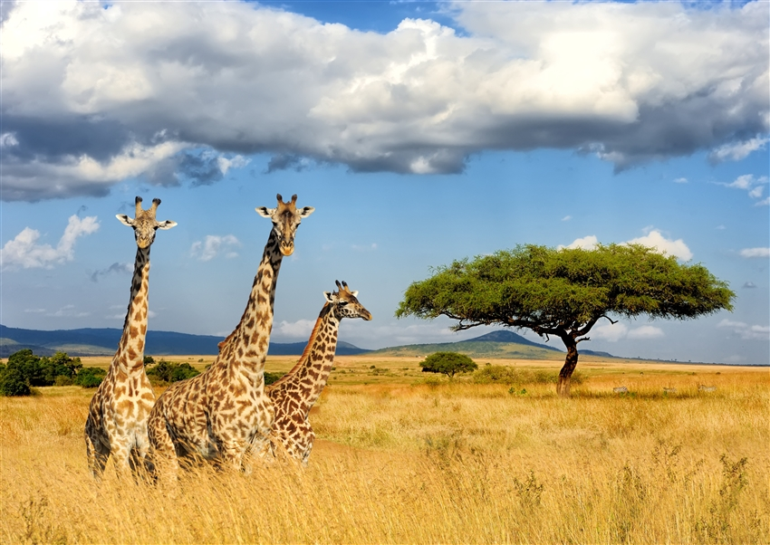

肯亞十日遊

📍 地點：肯亞
📅 天數：10天9夜
💰 價格：NT$ 162,900 起
行程內容
Day 1｜出發 → 奈洛比
- 搭乘國際航班前往奈洛比
- 抵達後專車接送至飯店休息
Day 2｜奈瓦夏湖
- 前往奈瓦夏湖，乘船遊湖觀賞河馬及鳥類
- 探訪湖邊小村落，體驗當地生活
Day 3｜甜水保護區
- 全天探索甜水保護區野生動物
- 觀察長頸鹿、斑馬及各類草原動物
Day 4｜阿布岱爾
- 前往阿布岱爾保護區進行遊獵活動
- 黃昏時拍攝日落景觀與動物群
Day 5｜馬賽馬拉保護區
- 全天遊獵於馬賽馬拉保護區
- 觀賞獅子、象群、長頸鹿及草原動物大遷徙（季節限定）
Day 6｜馬賽村落文化體驗
- 參觀馬賽村落，了解傳統服飾與生活方式
- 與當地居民互動，學習傳統舞蹈
Day 7｜地獄門峽谷
- 前往地獄門峽谷徒步探索自然景觀
- 欣賞峽谷奇岩與自然生態
Day 8｜自然保護區探索
- 全天於自然保護區追蹤野生動物
- 攝影與觀察草原生態
Day 9｜奈洛比自由活動
- 回到奈洛比，自由探索市區與購物
- 享受當地餐廳美食
Day 10｜返回台灣
- 早餐後前往機場搭乘班機返回台灣
- 結束肯亞探險之旅